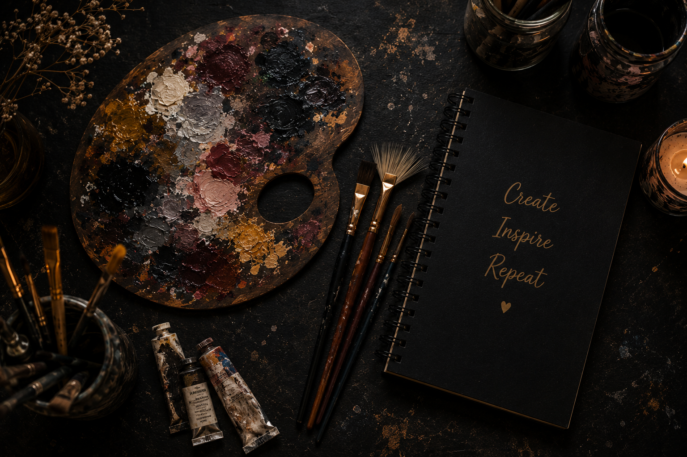

Welcome to my Art Studio! I am passionate about creating beautiful artworks using acrylic colors, sketching, and creative techniques. Every painting tells a unique story and reflects my love for art and creativity.
Through my YouTube channel, I share painting tutorials, speed painting videos, DIY art projects, and creative ideas to inspire art lovers around the world.
My goal is to encourage everyone to discover the joy of painting and express their imagination through colors.
Explore My GalleryBeautiful canvas paintings using vibrant acrylic colors.
Creative pencil sketches with detailed shading techniques.
Creative handmade crafts and decorative artwork.